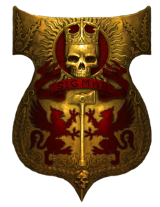
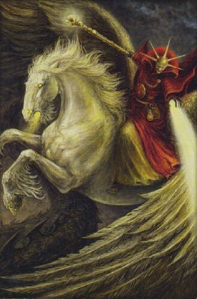

Империя
Империя – самая крупная и старая страна Старого Света и самая надёжная защита человечества от постоянной угрозы Хаоса. Она раскинулась от моря Когтей и Кислева на севере до Краесветных гор на востоке и юге и Серых гор на западе. Почти вся Империя покрыта древними, густыми лесами – рассадником диких и злых существ. Города и деревни, как островки цивилизации, стоят средь этой непроходимой глуши, и народ Империи постоянно борется с разнообразными опасностями, окружающими его.Её территории включают огромные леса, возвышающиеся подобно башням горы и буржуазные города университетов и культуры, где искусство войны идёт бок-о-бок с наукой. Однако это также опасная и мрачная страна предрассудков и страхов, где крестьяне хватаются за талисманы, дабы защититься от зла и оскверняющей силы Хаоса. Со времён её основания легендарным воином Зигмаром, Империя пережила войны, эпидемии чумы и внутренние смуты, одолев всё это благодаря храбрости своих войск и непоколебимости своего народа. Однако зло всё ещё скрывается в глубине страны, подобно нарывам, скрываясь во тьме, за горами и набирая силы в древних лесах и заброшенных крепостях. Орки постоянно нападают на границы Империи и угроза вторжения северных племён, которые поклоняются ужасным богам Хаоса, являются извечной угрозой для Империи..
Император Карл-Франц I
 курфюрст и великий князь
Рейкланда, князь Альтдорфа, Владыка Западного Предела, сюзерен Империи, считается величайшим из когда-либо живших
политиков Старого Света. Он известен как покровитель искусств и науки, как инноватор в военном деле и храбрый генерал.
Благодаря постоянно прилагаемым им усилиям, Империя процветает во время его правления как никогда до этого: Училище
Имперских Инженеров разрослось, Колледжи Магии процветают, а его армии идут от победы к победе. Император часто лично
командует солдатами, сражаясь легендарным молотом Гал Мараз, который даровал Зигмару гномий король Курган
Железнобородый больше двух тысяч лет назад. Этот молот является самым могущественным оружием, которое когда-либо
делали гномы того времени, когда их империя процветала.За время, прошедшее со времен его избрания, император внёс
немалый вклад в и без того длинный список побед и завоеваний Империи. Именно Карл-Франц возглавил атаку рейксгвардии,
которая обратила в бегство бретоннских рыцарей в битве при Нордуине. На Поле Крови именно храбрость императора удержала
фронт имперских войск против атаки кровожадной армии орков. Против орды Хаоса Моргхал-хая Дикого император лично повёл
в атаку своих доппельхендеров, ударив в самое сердце армии мародёров, где он сокрушил череп вражеского предводителя
молотом Гал Мараз.
курфюрст и великий князь
Рейкланда, князь Альтдорфа, Владыка Западного Предела, сюзерен Империи, считается величайшим из когда-либо живших
политиков Старого Света. Он известен как покровитель искусств и науки, как инноватор в военном деле и храбрый генерал.
Благодаря постоянно прилагаемым им усилиям, Империя процветает во время его правления как никогда до этого: Училище
Имперских Инженеров разрослось, Колледжи Магии процветают, а его армии идут от победы к победе. Император часто лично
командует солдатами, сражаясь легендарным молотом Гал Мараз, который даровал Зигмару гномий король Курган
Железнобородый больше двух тысяч лет назад. Этот молот является самым могущественным оружием, которое когда-либо
делали гномы того времени, когда их империя процветала.За время, прошедшее со времен его избрания, император внёс
немалый вклад в и без того длинный список побед и завоеваний Империи. Именно Карл-Франц возглавил атаку рейксгвардии,
которая обратила в бегство бретоннских рыцарей в битве при Нордуине. На Поле Крови именно храбрость императора удержала
фронт имперских войск против атаки кровожадной армии орков. Против орды Хаоса Моргхал-хая Дикого император лично повёл
в атаку своих доппельхендеров, ударив в самое сердце армии мародёров, где он сокрушил череп вражеского предводителя
молотом Гал Мараз.
Бальтазар Гельт
Бальтазар Гельт впервые появился в бурлящем работой порту Мариенбурга, сойдя на берег с борта торгового корабля, пришедшего из его родного Чёрного залива. Поскольку он заплатил за путешествие золотом, которое преобразовал сам из свинцовых слитков, Бальтазар поспешил покинуть Мариенбург до того, как эффект пропадёт. Его целью были Колледжи Магии. Ходят слухи, что обманутый капитан назначил щедрую награду за голову Бальтазара - хотя немногие теперь посмели бы пытаться заполучить её.С раннего детства Бальтазара всегда очаровывала алхимия. Его захватила наука о превращении металла, и особенно мистические поиски философского камня. Превращать простые металлы в благородное чистое золото - эта идея всегда будоражила ум Бальтазара.Ведомый этим желанием и поддерживаемый врождённым талантом управлять энергиями Ветров Магии, Бальтазар вскоре поднялся в положении в Золотом Ордене магии. Спустя десять лет Бальтазар стал патриархом Золотого Колледжа, самым молодым волшебником, когда-либо получившим такой пост. Он провёл много лет в Альтдорфе, изучая и экспериментируя, пытаясь слить воедино науку алхимию и магию металлов. Пытливый ум и объективный подход сделали Бальтазара популярным и в Гильдии Алхимиков, и среди инженеров. Открытие Бальтазаром новых формул бездымного пороха заслужило ему симпатию даже со стороны Имперского Колледжа Инженеров - организации, которая часто отвергает магию как суеверную ерунду.